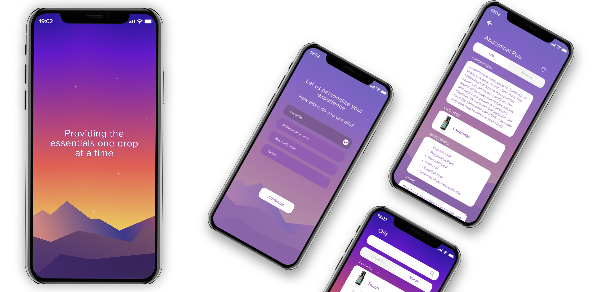

Case Study / UX Redesign
doTERRA Essential Oils App Redesign
A wellness app redesign focused on onboarding, guided personalization, and making oil education easier to browse without overwhelming new users.- Role
- UX/UI Design
- Focus
- Onboarding, search, product education
- Timeline
- Placeholder case study

Made onboarding feel guided
The redesign starts with questions that help users find relevant oils and routines instead of dropping them into a generic catalog.
Reduced education overload
Product details are broken into clearer sections so ingredients, benefits, and usage steps are easier to digest.
Softened the visual system
The interface uses warmer color, simpler cards, and a stronger mobile rhythm to make the content feel approachable.